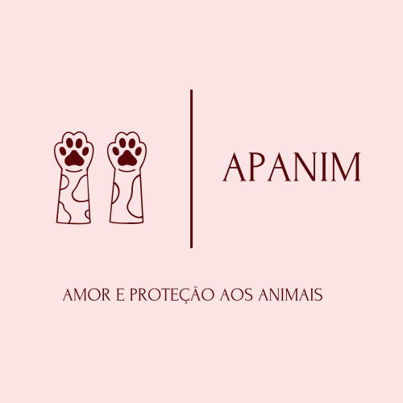
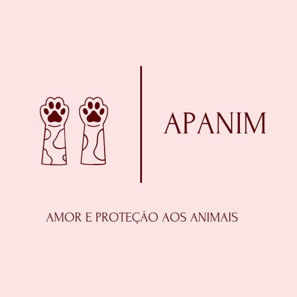
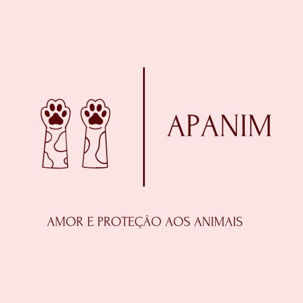

Pular para o conteúdo principal
🔍 Ajude a encontrar animais perdidos
Tipo de Animal:
Todos
🐕 Cachorro
🐱 Gato
Selecione o tipo de animal
Sexo:
Todos
♂ Macho
♀ Fêmea
Selecione o sexo do animal
Porte:
Todos os portes
🐕🦺 Pequeno
🐕 Médio
🐕🦮 Grande
Selecione o porte do animal
Bairro (Salvador-BA):
Todos os bairros
Acupe
Aeroporto
Águas Claras
Alto da Terezinha
Alto das Pombas
Alto do Cabrito
Alto do Coqueirinho
Amaralina
Areia Branca
Arenoso
Arraial do Retiro
Bairro da Paz
Baixa de Quintas
Barbalho
Barra
Barreiras
Barris
Beiru / Tancredo Neves
Boa Viagem
Boa Vista de Brotas
Boa Vista de São Caetano
Boca da Mata
Boca do Rio
Bom Juá
Bonfim
Brotas
Cabula
Cabula VI
Caixa D'Água
Cajazeiras II
Cajazeiras IV
Cajazeiras V
Cajazeiras VI
Cajazeiras VII
Cajazeiras VIII
Cajazeiras X
Cajazeiras XI
Calabar
Calabetão
Calçada
Caminho das Árvores
Caminho de Areia
Campinas de Pirajá
Canabrava
Candeal
Canela
Capelinha
Cassange
Castelo Branco
Centro
Centro Administrativo da Bahia (CAB)
Centro Histórico
Chame‑Chame
Chapada do Rio Vermelho
Cidade Nova
Colinas de Periperi
Comércio
Cosme de Farias
Costa Azul
Coutos
Curuzu
Dois de Julho
Dom Avelar
Doron
Engenho Velho da Federação
Engenho Velho de Brotas
Engomadeira
Fazenda Coutos
Fazenda Grande do Retiro
Fazenda Grande I
Fazenda Grande II
Fazenda Grande III
Fazenda Grande IV
Federação
Garcia
Graça
Granjas Rurais Presidente Vargas
Horto Florestal
IAPI
Ilha Amarela
Ilha de Bom Jesus dos Passos
Ilha dos Frades / Ilha de Santo Antônio
Ilha de Maré
Imbuí
Itacaranha
Itaigara
Itapuã
Itinga
Jaguaripe I
Jardim Armação
Jardim Cajazeiras
Jardim das Margaridas
Jardim Nova Esperança
Jardim Santo Inácio
Lapinha
Liberdade
Lobato
Luiz Anselmo
Macaúbas
Mangueira
Marechal Rondon
Mares
Massaranduba
Mata Escura
Matatu
Mirantes de Periperi
Monte Serrat
Moradas da Lagoa
Mussurunga
Narandiba
Nazaré
Nordeste de Amaralina
Nova Brasília
Nova Constituinte
Nova Esperança
Nova Sussuarana
Novo Horizonte
Novo Marotinho
Ondina
Palestina
Paripe
Patamares
Pau da Lima
Pau Miúdo
Periperi
Pernambués
Pero Vaz
Piatã
Pirajá
Pituaçu
Pituba
Plataforma
Porto Seco Pirajá
Praia Grande
Resgate
Retiro
Ribeira
Rio Sena
Rio Vermelho
Roma
Saboeiro
Santa Cruz
Santa Luzia
Santa Mônica
Santo Agostinho
Santo Antônio
São Caetano
São Cristóvão
São Gonçalo
São João do Cabrito
São Marcos
São Rafael
São Tomé
Saramandaia
Saúde
Sete de Abril
Stella Maris
STIEP
Sussuarana
Tororó
Trobogy
Uruguai
Vale das Pedrinhas
Vale dos Lagos
Valéria
Vila Canária
Vila Laura
Vila Ruy Barbosa / Jardim Cruzeiro
Vitória
Vista Alegre
Selecione o bairro onde o animal foi visto pela última vez
Período do Desaparecimento:
Todos os períodos
📅 Última semana
📅 Último mês
📅 Últimos 3 meses
📅 Mais de 3 meses
Selecione quando o animal desapareceu
🔍 Aplicar Filtros
🔄 Limpar Filtros
Animais Perdidos
8 animais procurados
Nenhum animal encontrado
Tente ajustar os filtros para ver mais animais perdidos.
🔄 Limpar Filtros
 
